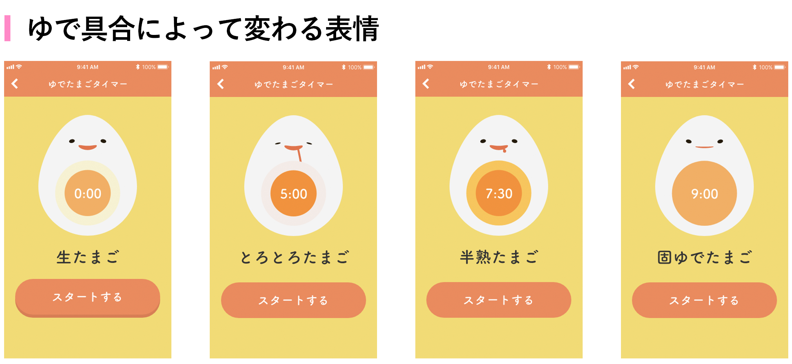
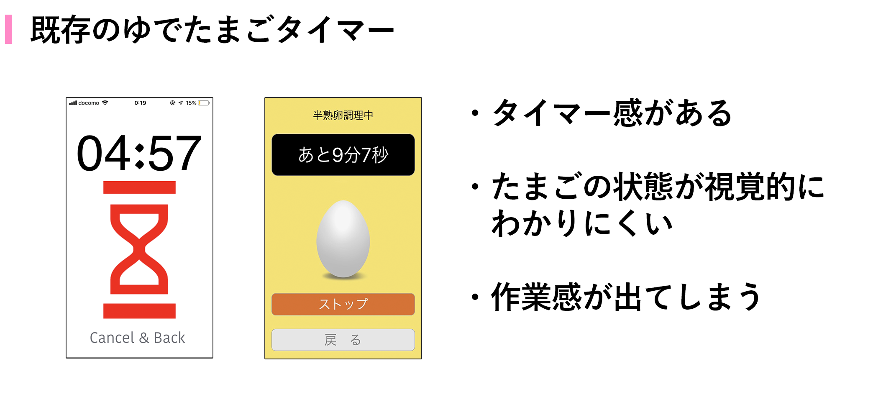
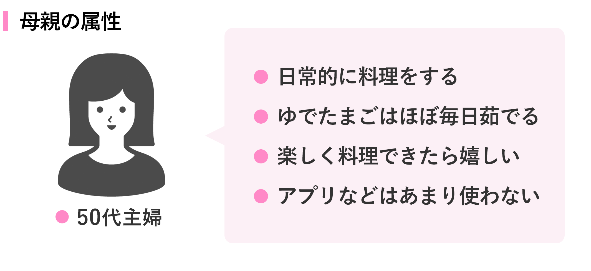
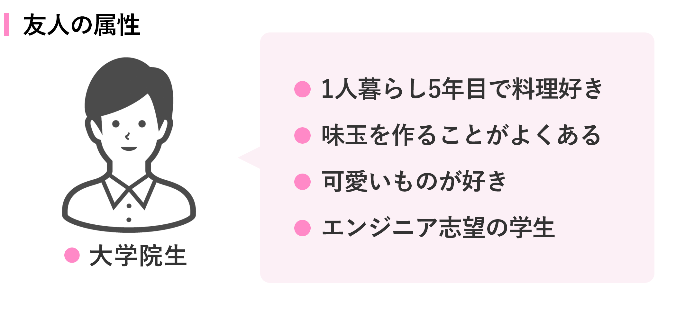

ゆでたまごタイマー

概要
料理初心者でも簡単にゆでたまごが作れるタイマーのデザインをしました。  ゆでている途中でたまごの状態を確認できることと、シンプルでわかりやすく可愛いUIが特徴です。また、友人に実装してもらい、現在AppStoreにリリース申請中です。
プロトタイプ
現在、友人や家族にTestflightで試してもらいながら改善を行なっています。（下記参照）
きっかけ
このアプリを作ろうとしたきっかけは、自分で半熟たまごを作ろうとして失敗したことからです。既存のゆでたまごタイマーはたまごを茹でている途中の状態がわからなかったり、作業感のあるものばかりでした。
そのため、ゆで途中のたまごの状態がわかるようにし、さらに可愛いキャラクターを用いることで料理中の体験を楽しくするような工夫を取り入れました。
リリース後は料理初心者に試してもらい、改善を繰り返したいと思います。
改善中
母親に試してもらって（1回目のユーザーテスト）
今回のユーザーテストの目的は、UIなどで使いにくい部分がないか確認することでした。 母親に自宅のキッチンで実際に使ってもらった結果、以下の課題が見つかりました。
- レシピに火加減が書いていないから困る
- スタートボタンを押したのかわからないUI
- 「固ゆで」で作ったたまごが半固ゆでだった
 XDのプロトタイプで上記の仮説を反映させたものを作り、2回目のユーザーテストを行いました。
XDのプロトタイプで上記の仮説を反映させたものを作り、2回目のユーザーテストを行いました。
友人に試してもらって（2回目のユーザーテスト）
今回のユーザーテストの目的は、プロトタイプで改善したものを触ってもらって、1回目のユーザーテストで立てた仮説を検証することでした。 友人の家で実際に使ってもらった結果、以下のことがわかりました。
- 殻をむきやすくする方法もあった方が良い
- とろとろたまごは殻が剥けないので、ゆでたまごには不向きかもしれない
- 基準の時間から3分足すと成功する